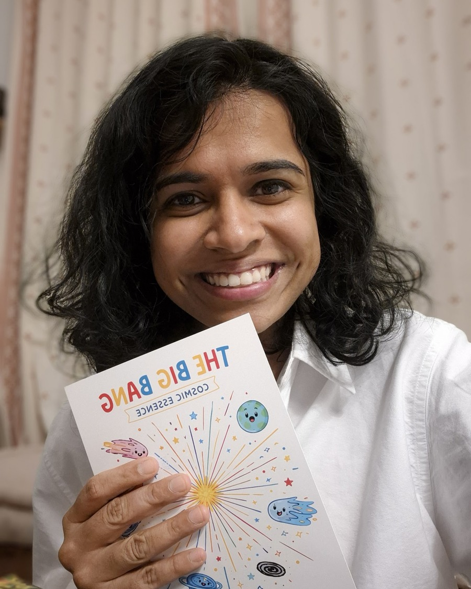

Experimental Nuclear Physicist
Niveditha Ram
I am a CNRS researcher at IP2I Lyon working in experimental particle and nuclear physics. My research spans detector development and physics analysis, with current work in the ALICE experiment at the LHC.

Currently
I work with the ALICE collaboration on ultra-peripheral collisions and forward-muon measurements, and on performance and calibration of the Muon Forward Tracker. Before joining CNRS, I worked with CLAS12 and ePIC at CEA Saclay, and with PHENIX and sPHENIX during my PhD at Stony Brook University.
I am also a Professor of Practice at SASTRA University, where I teach courses in nuclear technologies.
Updates & news
Recent
Jul 2026
Gave a presentation on AI usage in the ALICE collaboration at ALICE Week
Jun 2026
Talk on "UPC measurements with forward detectors." at ALICE UPC Workshop, Katowice
Jan 2026
GDR QCD WG3 : Started Convenorship — Precision QCD and Hard Probes.
Jan 2026
Seminar Organisation : Started a term as one of the two organisers of the IP2I seminar series.
Summer 2025
Spent a few weeks at Lawrence Berkeley National Laboratory (LBNL) in Berkeley.
Jul 2025
Taught a two-part lecture at the GDR-QCD Summer School on experimental advances
and challenges in GPDs and TMDs.